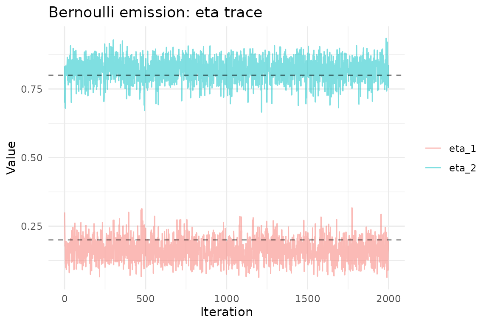
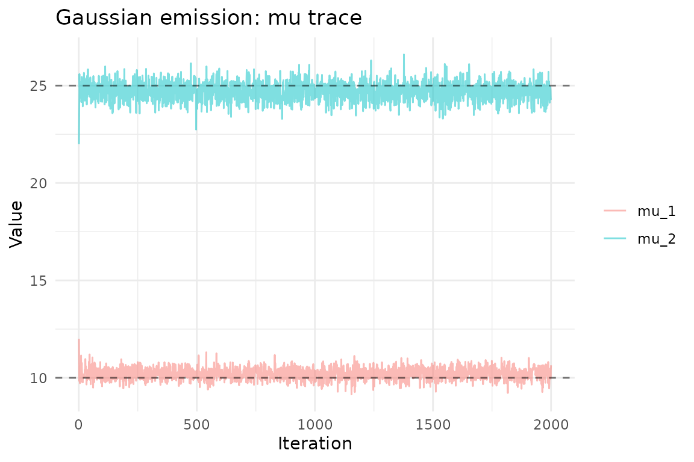
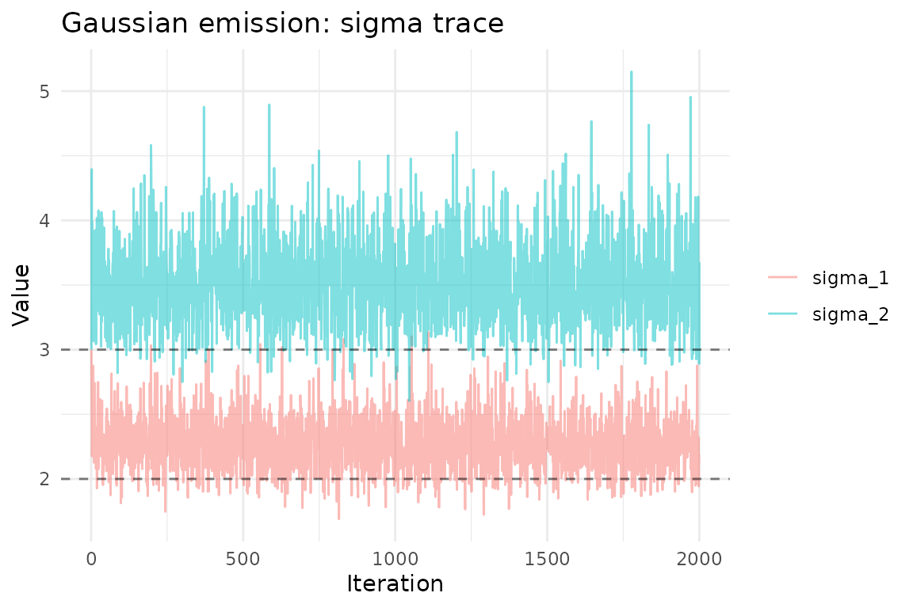
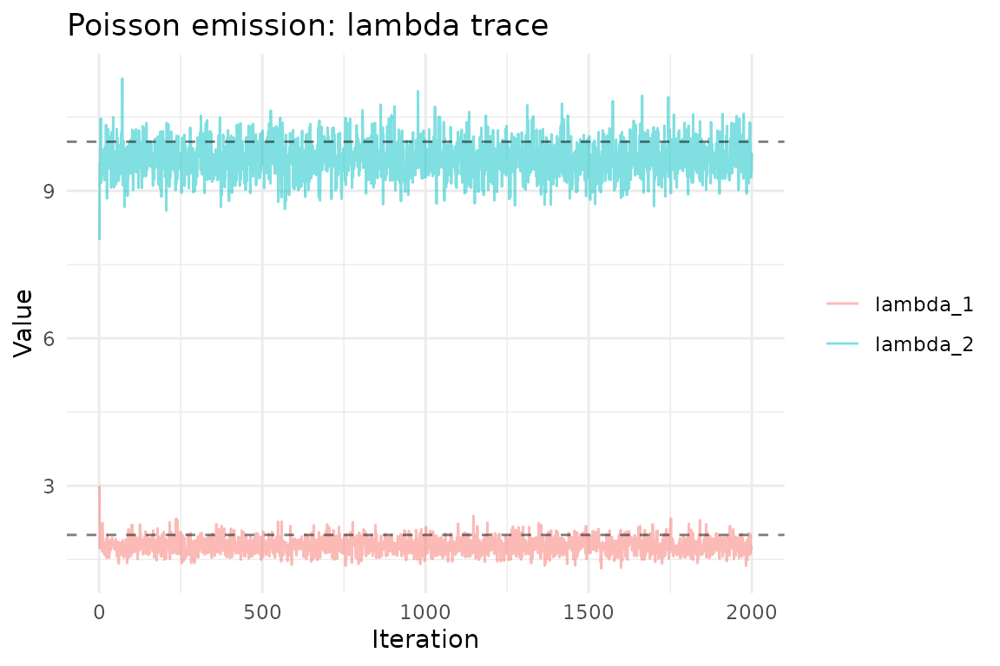
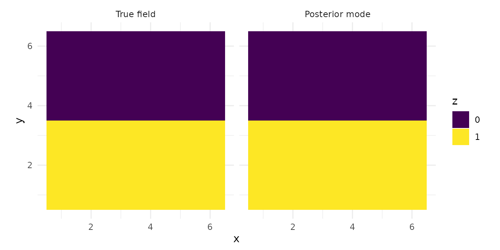

Overview
In a hierarchical MDGM, the spatial field is latent and observations are generated through an emission distribution. The mdgm package supports three emission families:
| Family | Observation type | Parameters | Prior |
|---|---|---|---|
| Bernoulli | Binary (0/1) | (success probability) | Beta |
| Gaussian | Continuous (integer-valued) | , | Normal-InverseGamma |
| Poisson | Count | (rate) | Gamma |
All emission families enforce an identifiability constraint on their location parameters: (Bernoulli), (Gaussian), or (Poisson). This is achieved via truncated conjugate posterior sampling.
Bernoulli emission
The Bernoulli emission models binary observations. Each vertex can have multiple replicate observations , each drawn independently from .
Example: binary disease indicators on a grid
nug <- nug_from_grid(6, 6, seed = 42L)
n <- nug$nvertices()Simulate a latent field and binary observations:
set.seed(1)
# True latent field: left half = 0, right half = 1
z_true <- rep(0:1, each = n / 2)
# True emission probabilities
eta_true <- c(0.2, 0.8)
# 5 replicate observations per vertex
y <- lapply(seq_len(n), function(i) {
rbinom(5, 1, eta_true[z_true[i] + 1])
})Fit the model:
model <- mdgm_model(nug, dag_type = "spanning_tree",
n_colors = 2L, emission = "bernoulli")
result <- mcmc(model, y = y,
z_init = sample(0:1, n, replace = TRUE),
psi_init = 0.5,
eta_init = c(0.3, 0.7),
n_iter = 2000L,
psi_tune = 1.0,
emission_prior_params = c(1, 1),
seed = 42L,
nug = nug)
result$summary(burnin = 500L)
#> MDGM MCMC Results
#> Vertices: 36, Colors: 2
#> Iterations: 2000 (burnin: 500)
#> Psi acceptance rate: 0.650
#> Psi posterior mean: 3.1057 (sd: 1.1578)
#> Emission type: bernoulli
#> eta_1 posterior mean: 0.1606 (sd: 0.0400)
#> eta_2 posterior mean: 0.8197 (sd: 0.0401)
#> Psi R-hat: 1.0025, ESS: 91Posterior trace plots
ep <- result$emission_params()
eta_df <- data.frame(
iteration = rep(1:2000, 2),
value = c(ep$eta[1, ], ep$eta[2, ]),
parameter = rep(c("eta_1", "eta_2"), each = 2000)
)
ggplot(eta_df, aes(iteration, value, color = parameter)) +
geom_line(alpha = 0.5) +
geom_hline(yintercept = eta_true, linetype = "dashed", alpha = 0.5) +
theme_minimal() +
labs(title = "Bernoulli emission: eta trace",
x = "Iteration", y = "Value", color = NULL)
Gaussian emission
The Gaussian emission models continuous (integer-valued) observations. Each observation is drawn from .
The prior is a Normal-InverseGamma: and .
Example: spatial temperature field
nug_g <- nug_from_grid(6, 6, seed = 42L)
n_g <- nug_g$nvertices()
set.seed(2)
# Two spatial clusters: cold (left) and warm (right)
z_true_g <- rep(0:1, each = n_g / 2)
mu_true <- c(10, 25)
sigma_true <- c(2, 3)
# 3 replicate observations per vertex (rounded to integers for storage)
y_g <- lapply(seq_len(n_g), function(i) {
as.integer(round(rnorm(3, mu_true[z_true_g[i] + 1],
sigma_true[z_true_g[i] + 1])))
})Fit with Gaussian emission:
model_g <- mdgm_model(nug_g, dag_type = "spanning_tree",
n_colors = 2L, emission = "gaussian")
# eta_init: c(mu_1, mu_2, sigma_1, sigma_2)
result_g <- mcmc(model_g, y = y_g,
z_init = sample(0:1, n_g, replace = TRUE),
psi_init = 0.5,
eta_init = c(12, 22, 3, 3),
n_iter = 2000L,
psi_tune = 1.0,
emission_prior_params = c(0, 0.01, 2, 1),
seed = 42L,
nug = nug_g)
result_g$summary(burnin = 500L)
#> MDGM MCMC Results
#> Vertices: 36, Colors: 2
#> Iterations: 2000 (burnin: 500)
#> Psi acceptance rate: 0.644
#> Psi posterior mean: 3.2391 (sd: 1.0457)
#> Emission type: gaussian
#> mu_1 posterior mean: 10.2123 (sd: 0.3045)
#> sigma_1 posterior mean: 24.7006 (sd: 0.4767)
#> NA posterior mean: 2.2668 (sd: 0.2140)
#> NA posterior mean: 3.5253 (sd: 0.3376)
#> Psi R-hat: 0.9999, ESS: 156Posterior emission parameters
ep_g <- result_g$emission_params()
mu_df <- data.frame(
iteration = rep(1:2000, 2),
value = c(ep_g$mu[1, ], ep_g$mu[2, ]),
parameter = rep(c("mu_1", "mu_2"), each = 2000)
)
ggplot(mu_df, aes(iteration, value, color = parameter)) +
geom_line(alpha = 0.5) +
geom_hline(yintercept = mu_true, linetype = "dashed", alpha = 0.5) +
theme_minimal() +
labs(title = "Gaussian emission: mu trace",
x = "Iteration", y = "Value", color = NULL)
sigma_df <- data.frame(
iteration = rep(1:2000, 2),
value = c(ep_g$sigma[1, ], ep_g$sigma[2, ]),
parameter = rep(c("sigma_1", "sigma_2"), each = 2000)
)
ggplot(sigma_df, aes(iteration, value, color = parameter)) +
geom_line(alpha = 0.5) +
geom_hline(yintercept = sigma_true, linetype = "dashed", alpha = 0.5) +
theme_minimal() +
labs(title = "Gaussian emission: sigma trace",
x = "Iteration", y = "Value", color = NULL)
Poisson emission
The Poisson emission models count data. Each observation is drawn from .
The prior is a Gamma distribution: with rate parameterization (mean ).
Example: spatial species counts
nug_p <- nug_from_grid(6, 6, seed = 42L)
n_p <- nug_p$nvertices()
set.seed(3)
# Two habitats: sparse (left) and abundant (right)
z_true_p <- rep(0:1, each = n_p / 2)
lambda_true <- c(2, 10)
# 4 replicate counts per vertex
y_p <- lapply(seq_len(n_p), function(i) {
as.integer(rpois(4, lambda_true[z_true_p[i] + 1]))
})Fit with Poisson emission:
model_p <- mdgm_model(nug_p, dag_type = "spanning_tree",
n_colors = 2L, emission = "poisson")
result_p <- mcmc(model_p, y = y_p,
z_init = sample(0:1, n_p, replace = TRUE),
psi_init = 0.5,
eta_init = c(3, 8),
n_iter = 2000L,
psi_tune = 1.0,
emission_prior_params = c(1, 0.1),
seed = 42L,
nug = nug_p)
result_p$summary(burnin = 500L)
#> MDGM MCMC Results
#> Vertices: 36, Colors: 2
#> Iterations: 2000 (burnin: 500)
#> Psi acceptance rate: 0.664
#> Psi posterior mean: 3.3126 (sd: 1.1022)
#> Emission type: poisson
#> lambda_1 posterior mean: 1.7821 (sd: 0.1595)
#> lambda_2 posterior mean: 9.6655 (sd: 0.3693)
#> Psi R-hat: 1.0010, ESS: 110Posterior trace plots
ep_p <- result_p$emission_params()
lambda_df <- data.frame(
iteration = rep(1:2000, 2),
value = c(ep_p$lambda[1, ], ep_p$lambda[2, ]),
parameter = rep(c("lambda_1", "lambda_2"), each = 2000)
)
ggplot(lambda_df, aes(iteration, value, color = parameter)) +
geom_line(alpha = 0.5) +
geom_hline(yintercept = lambda_true, linetype = "dashed", alpha = 0.5) +
theme_minimal() +
labs(title = "Poisson emission: lambda trace",
x = "Iteration", y = "Value", color = NULL)
Comparing latent field recovery
For all three emission types, the posterior mode of the latent field should recover the true spatial pattern. Here we compare using the Poisson example:
burnin <- 500L
z_post <- result_p$z()
z_post_burn <- z_post[, (burnin + 1):ncol(z_post)]
# Posterior mode per vertex
z_mode <- apply(z_post_burn, 1, function(row) {
tbl <- tabulate(row + 1L, nbins = 2)
which.max(tbl) - 1L
})
field_df <- data.frame(
x = rep(1:6, 6),
y = rep(6:1, each = 6),
value = c(z_true_p, z_mode),
panel = rep(c("True field", "Posterior mode"), each = n_p)
)
field_df$panel <- factor(field_df$panel, levels = c("True field", "Posterior mode"))
ggplot(field_df, aes(x, y, fill = factor(value))) +
geom_tile() +
scale_fill_viridis_d() +
coord_equal() +
facet_wrap(~panel) +
theme_minimal() +
labs(fill = "z")
Choosing an emission family
| Scenario | Recommended emission |
|---|---|
| Binary outcomes (presence/absence, success/failure) | "bernoulli" |
| Continuous measurements (temperature, concentration) | "gaussian" |
| Count data (species counts, event counts) | "poisson" |
Prior tuning tips
-
Bernoulli
c(a, b): Usec(1, 1)(uniform) as a default. Increaseaandbto shrink toward 0.5 if you expect weak signal. -
Gaussian
c(mu_0, kappa_0, alpha_0, beta_0): Setmu_0near the data mean,kappa_0small (e.g., 0.01) for weak location prior, andalpha_0 = 2,beta_0near the expected variance for a weakly informative scale prior. -
Poisson
c(alpha_0, beta_0): The prior mean isalpha_0 / beta_0. Usec(1, 0.1)for a diffuse prior with mean 10, or match to the expected count range.